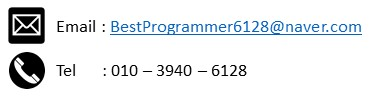
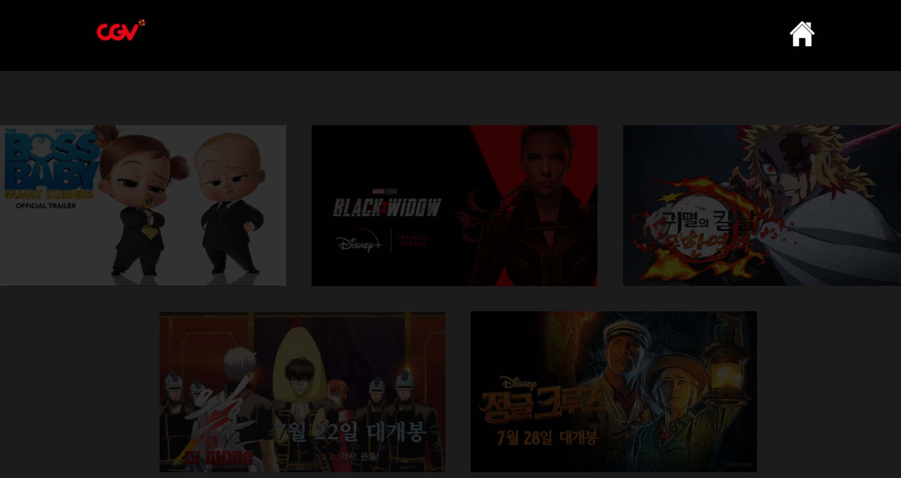
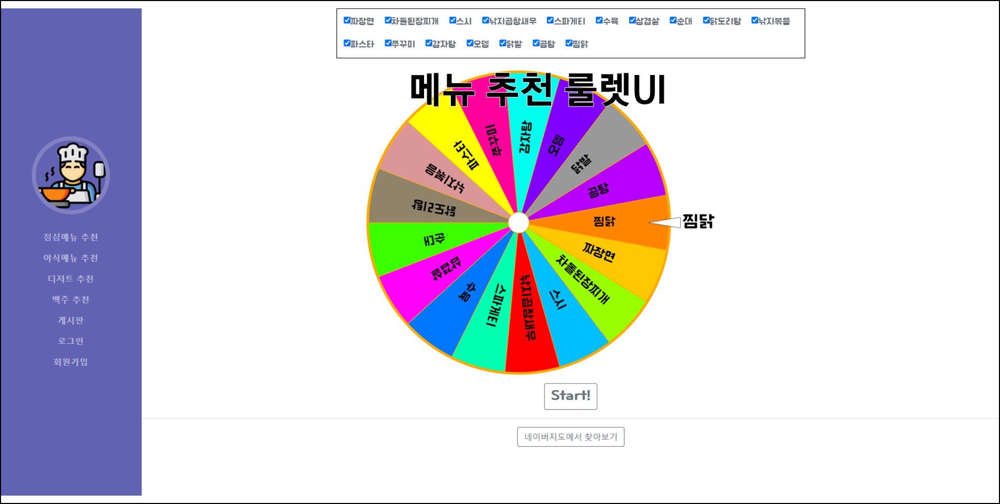
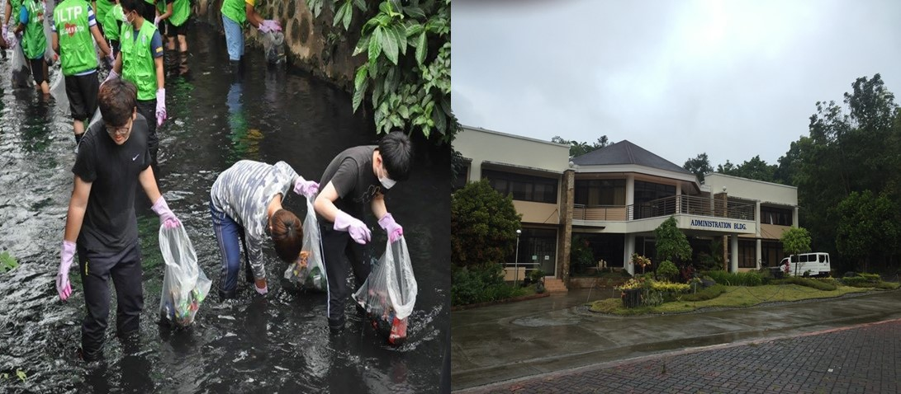
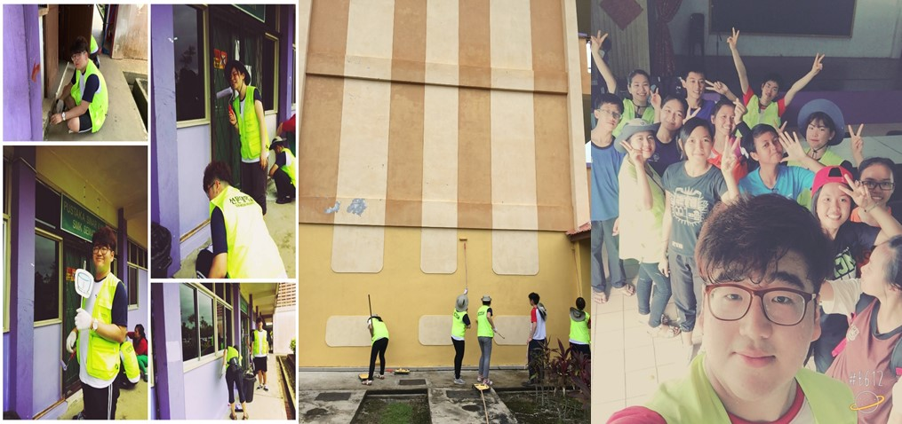
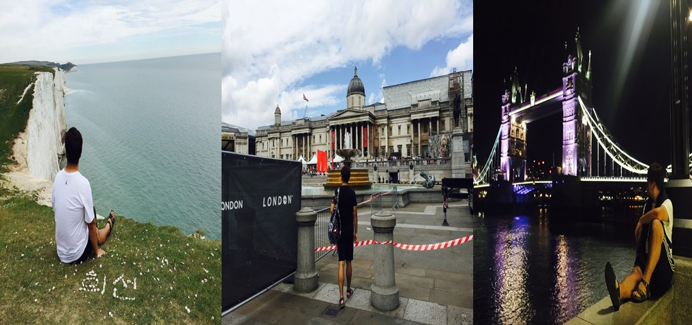
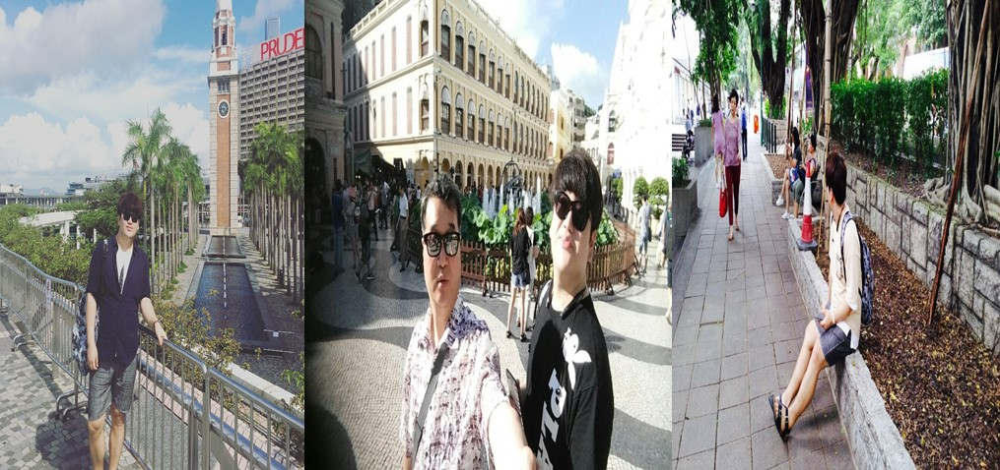
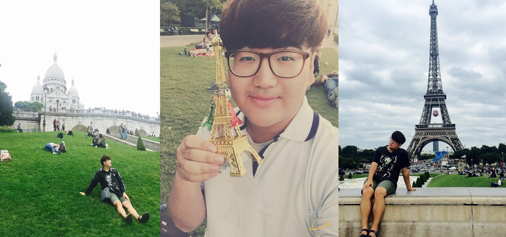
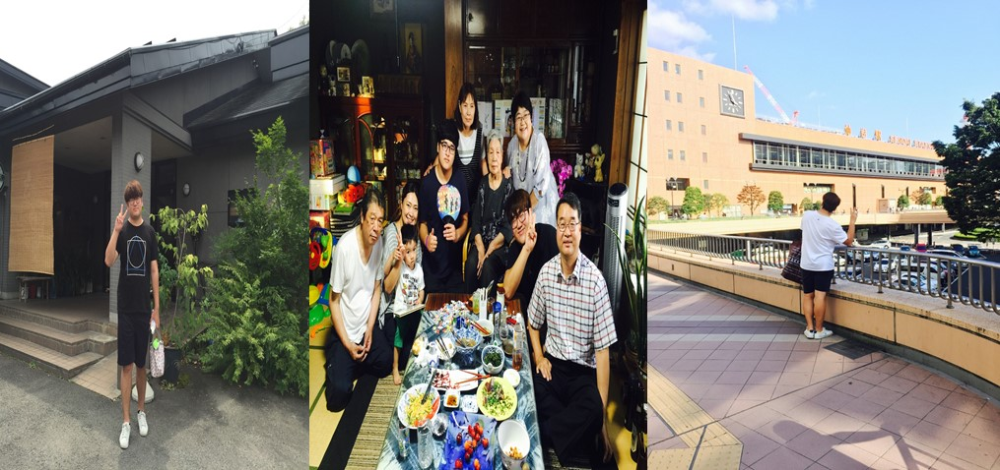

선문대학교
경찰행정법학과/컴퓨터공학부
안녕하세요!
일본에서 풀스텍 개발자가 되기 위해 노력하고 있는 송희선입니다.
아직 일본어 실력과 프로그래밍 실력이 많이 부족하지만 차근차근 노력하고 있습니다. 반응형 웹 앱에도 관심을 갖고있어 공부하고 있습니다!!잘부탁드립니다.
일본어
프로그래밍 언어
데이터베이스
프레임워크

GITHUB
[ ProJect ]


Project1
Movie Kiosk
CGV의 예매 키오스크를 벤치마킹하여 더블클릭을 통해 전체화면으로 변경 뒤 Ajax를 사용하여 비동기 화면 이동을 통해 전체화면이 깨지지 않는 상태에서
이루어질 수 있도록 구성하였고, 저는 영화 예매부분의 프론트엔드 부분을 전담하여 받아 진행했습니다.
이 프로젝트를 진행하면서,
Jquery, JavaScript를 보다 능숙하게 활용할 수 있었습니다.

Project2
What shoud i eat today?
오늘 뭐먹지라는 웹사이트는, 현대 사회에서 무엇을 먹을지 고민하는 사람들에게 무작위의 음식 중 룰렛을 돌려 선택할 수 있고 해당 음식을 네이버지도와 연결하여 내 근처 어디에서 먹을 수 있는지 알아보는 프로그램이다. 나는 이 프로그램에서 로그인 및 회원가입의 JavaScript를 사용한 프론트엔드, PHP를 통해 MariaDB와 연결해 회원가입 정보를 저장, 게시판 글을 데이터베이스에 저장하는 백엔드 프로그래밍을 하였다.
학창시절 가장 열심히한 활동
제가 학생때 가장 열심히한 활동은 학교 홍보 활동으로, 학교의 페이스북 계정, 인스타계정, 블로그,
학교의 이런저런 소식들을 전할 수 있는 교수님 교직원분들 및 학생들을 대상으로 한 잡지를 만드는 활동이었습니다
SNS를 좋아했던 저는 우연히 활동에 대한 설명을 보고 도전하고 싶어져 참여하게 되었고, 자연스럽게 학생대표가 되었습니다
사실상 죽어있던 인스타 페이스북를 살려내고 새롭게 블로그와 SRT라는 잡지를 제작하는데 저의 팀원 5명이 정말 고생을 많이 했습니다
많은 노력끝에 인정을 받아 총장님께서 주시는 최우수상도 받았으며, 지금은 한 때의 힘들었지만 즐거웠던 추억으로 간직하고 있습니다.
나의 해외 경험들
저의 취미는 여행입니다라고 말씀 드렸듯, 어릴적부터 많은 나라들을 방문해 현재 11개의 나라를 방문했으며
제 버킷리스트 중 한가지는 6대륙을 모두 밟아보는 것입니다.
아프리카와 오세아니아, 남아메리카를 기회가 된다면 꼭 밟아보고 싶습니다.

Philippines
따나이 지역 봉사활동 / 어학 연수
빈민가의 썩은 하천에서 쓰레기를
걷어올리는 봉사활동을 하였고
필리핀대학에서 어학연수를 했습니다.

Malaysia
교육 봉사, 페인트 봉사
말레이시아 시골 마을 초등학교에
페인트를 칠하는 봉사와,
Kpop 춤을 가르치는 교육봉사를 진행했습니다..

England
유럽 여행
동유럽 6개국을 여행했는데 그 중 가장 맘에 들었던 나라입니다. 음식은 별로라도 가장 깨끗하고 좋았던 기억뿐인 영국입니다.

Hongkong
홍콩 여행(with Father)
2017년도 더운 여름, 아버지와 둘이 다녀온 홍콩입니다. 이떄의 홍콩 감성을 지금은 느끼지 못할거 같아 아쉽습니다.

france
유럽 여행
청결은 그 어느나라보다 별로였지만 에펠탑 하나만큼은 유럽 최고였습니다. 기회가 된다면 꼭 한번 다시 가보고 싶네요!

Japan
일본 여행 및 외가댁 방문
저의 가족 다같이 일본 山形 외가댁에 방문하며 외할머니 외할아버지 제사도 지내고, 외가 가족들과도 즐거운 시간을 보냈었습니다.